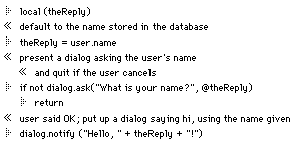

| TOP | UP: UserTalk Basics | NEXT: Handlers and Parameters |
The physical milieu in which scripts are most often written is the edit window of a script object. This chapter describes this physical milieu and how it is intimately bound up with UserTalk syntax. Since scripts are essentially outlines, you should familiarize yourself first with editing and navigating outlines; see Chapter 2, Edit Windows .
UserTalk is an "imperative" language, meaning that a UserTalk program is basically a sequence of commands. These commands are executed consecutively from the start of a script to its end, or until a command to stop execution is reached.
Some UserTalk commands just introduce syntactic constructs which help define the path of execution. For instance, such a command might declare certain other commands to be a loop. But these commands, which are called keywords, don't really take significant action. Every UserTalk command that takes action does so by one of two methods: it performs an assignment, or it calls a verb.
A variable is a kind of container, a named object whose job is to hold a value. An assignment is a command to set the value of a variable; the equal sign (=) is the main operator denoting this command.
A verb is a script, or part of a script: it is a named sequence of commands. A verb call is an instruction causing a particular verb to be executed. It consists of the name of the verb followed by parentheses, which must contain any parameters expected by that verb; it is the use of parentheses which signifies that this is a verb call. (Parameters are discussed in detail in Chapter 5, Handlers and Parameters .)
Here, for instance, is a two-line UserTalk script. The first line performs an assignment, giving a variable s the string value "Hello, World!"; the second line then calls a Frontier verb whose job is to put up a dialog displaying whatever text was passed to it as its parameter. In this case, that text is the value of the variable s, which was assigned in the first line. Therefore, executing this script causes a dialog to appear that reads Hello, World!
s = "Hello, World!" |
dialog.notify(s) |
TIP You may wish to try typing and executing this script (and others). You will have to create a script object in the database; I generally keep "scratch" script objects in the workspace table. To create such a script, choose Workspace from the Open menu, then choose New Script from the Table menu, and name the script. To execute a script whose edit window is frontmost, click the window's Run button.

It is not an error for a UserTalk command to consist of neither an assignment nor a verb call; but such a command will perform no action. Here, for instance, is the same two-line script, bereft of assignment in the first line (the variable and equal sign are gone) and of a verb call in the second line (the parentheses have been removed).
"Hello, World!" |
dialog.notify |
This script runs without error, but nothing happens.1 The reason there is no error is because what Frontier is really looking for whenever you speak UserTalk to it is a legal UserTalk expression. Frontier's reaction is to evaluate the expression; it chokes only if it cannot do so. In Example 4-2, each expression can be evaluated, so there's no problem. If an expression involves an assignment or a verb call, Frontier also performs the command, as part of the evaluation process; that's how a script actually takes action.
To illustrate, open the Quick Script window (choose Quick Script from the Open menu). This is a place to speak UserTalk directly to Frontier. Type 3+4 into the main part of the window, and hit its Run button (or the Enter key). In the lower part of the window, Frontier responds: 7. You typed a legal UserTalk expression; Frontier evaluated it and told you its value. Now select and delete the contents of the main part of the window, and type instead: workspace.x=8. Frontier responds: 8. The assignment command itself has a value - the value of its right-hand side - so Frontier evaluated it and told you that value. But the evaluation of an assignment also causes the assignment to be performed. Examine the workspace table: you will see that it now has an entry called x, and that x's value, sure enough, is 8.
There is one more thing about assignment that is useful to understand right from the start. At every moment, a variable's value has a particular type, and the set of legal types, UserTalk's datatypes , is well defined. But a variable is not glued to its type; it doesn't mind changing it. The following is a legal UserTalk script:
s = "Hello, World!"
s = 7
Frontier is not at all upset that the variable s starts life with a string value and is then assigned a number value; it happily turns s into a number. We'll talk much more about the datatypes in Chapter 10, Datatypes .
Did you, observant reader, notice in Example 4-1 a certain similarity between the name of the verb dialog.notify and the way one refers to an entry in the database? Both workspace.x (for instance) and dialog.notify use a dot-notation, the names being composed of elements with a period between them.
The vast majority of UserTalk's built-in verbs are named in this way (though some just have single-element names). This is a great convenience, as it makes the verbs easier to name uniquely and to remember. There are about three dozen pre-defined categories of verb, making up the first part of the name; within each category, the verbs are named appropriately to their function. For instance, dialog.notify() and dialog.alert() both put up dialogs; they differ in the look of their respective dialogs.
But the use of dot-notation in naming verbs is not merely a matter of convenience, nor is the use of dot-notation both in naming verbs and in referring to database entries a coincidence: all UserTalk verbs are in fact database entries. To see this, take a look at them: they're located mostly at system.verbs.builtins. That table, you will see, has a dialog entry, itself a table which does indeed contain a notify script and an alert script.2 Other verbs, those with "simple" names, are entries in system.verbs.globals or system.macintosh.globals; and all verbs constituting the core of UserTalk's functionality are ultimately entries in system.compiler.language.builtins and system.compiler.kernel, where they are translated into tokens at compile time.
This helps to explain why it is not an error to leave the parentheses off a verb call. The expression:
dialog.notify
dialog.notify()
refers, quite legally, to an entry in the database: namely system.verbs.builtins.dialog.notify. But since the parentheses are omitted, it fails to inform Frontier that what you want to do is not merely to talk about that database entry, but to execute the script that is located there. (Conversely, it is a runtime error to make a verb call to a database entry that is not a script object.)
Scripts that you create can be script objects in the database, too, just like built-in UserTalk verbs; then you can call them from other scripts just as you call built-in UserTalk verbs. From Frontier's point of view, there is no distinction between built-in verbs and verbs that you create by writing scripts. So when you write a script in UserTalk, you are effectively extending the UserTalk language.
Therefore, it is not entirely clear, with respect to the repertory of UserTalk verbs, just where the boundaries of the UserTalk language are! One tends to speak of "built-in verbs" on the one hand and "utility scripts" on the other, but the distinction is contingent and artificial. The only verbs that can be said to be truly "built-in" are those whose ultimate implementation is hard-coded into Frontier: you can spot these because all their scripts do is pass the call directly along to the "kernel." For instance, dialog.hideItem() works this way.
But dialog.notify() and dialog.alert() are mere scripts; their chief action is performed by calling a different verb, card.run(), which calls the kernel. Yet dialog.notify() and dialog.alert() are considered "built-in verbs," in the sense that they are a standard part of the UserTalk language. On the other hand, suites.toys.readWholeFile(), which reads a textfile from disk into a variable, is generally considered a "utility script," not a basic verb of the language, even though its implementation doesn't differ significantly in nature from that of dialog.alert() - and though it performs a valuable, even fundamental, function.
The truth is that the repertory and implementation of UserTalk verbs are moving targets. Historically, dialog.alert() was a "kernel" verb at one time, but it was rewritten as a script when a new method of constructing dialogs (MacBird) was integrated into Frontier. In just the opposite way, string.iso8859encode() was created as a script, and now it is a "kernel" verb (for speed). Thus, the official database, the "clean root" distributed each time a new version of Frontier comes out, constantly evolves.3 Meanwhile, each user is evolving her or his "unofficial" parts of the database, adding utility scripts and other objects.
All UserTalk verbs, then, are script objects in the database. Any useful UserTalk program will probably contain some verb calls, so a UserTalk program can be envisioned as database script objects calling one another. The user is free, and encouraged, to extend the UserTalk verb repertory by writing scripts. The user is also able to explore the database, and so to examine the implementation of "built-in" verbs and utility scripts; this can be a way of learning more about the language, and a help in debugging scripts.
Because the "clean root" is constantly evolving, and because the distinction between built-in verbs and utility scripts is not clearcut, this book sets itself some arbitrary limits on what parts of the database to document. All verbs in system that are common currency are documented, except for system.verbs.apps which are specialized and mostly self-documenting (I do discuss this area in some detail, but without documenting every verb); many utility verbs from suites are also listed. Generally speaking, whenever valuable functionality is squirrelled away in the database in places where you would have had to explore systematically to discover it, I have tried to save you the trouble.
The window in which one edits a script object is nearly identical to that in which one edits an outline object; in essence, a script is a kind of outline. Frontier makes the outline integral to one's experience of the UserTalk language. This turns out to be hugely sensible, powerful, and convenient - indeed, the integration of outlining with script editing is one of Frontier's most characteristic and brilliant innovations.4
How do scripts relate to their outline milieu? First, outlines come in distinct lines. Therefore, each line of a script is considered a separate command.5
Since a line of an outline is limited to 255 characters, very long lines of code, which are sometimes unavoidable (for instance, in a call to a verb that takes very many parameters) are impossible. To get around this, the backslash (\) is used as a line continuation indicator: a line of UserTalk ending with a backslash is considered to continue on the next line. This device is useful also just to improve readability of scripts, to get around the fact that lines do not "soft-wrap" in a script edit window.
Second, UserTalk takes advantage of the hierarchical nature of outlines by using subordination in its control-flow and definitional keyword constructs. Control-flow and definitional commands apply to the bundle that is subordinate to them.
This UserTalk script illustrates all the points just made.
The script has six commands: seven lines, but one of them is a command split across two lines, using the backslash as the line continuation character. Notice that when there is line continuation like this, indentation is not meaningful; the line which begins with @theYear could just as well be at the same level as the line which begins with date.get instead of being indented under it - I have indented merely for legibility.
On the other hand, the indentation of the line which follows the if line, and that of the line which follows the else line, is meaningful. After an if line, the way that Frontier knows what commands to execute if the condition is true is by looking for the bundle indented under that if line. Here, that bundle consists of just a single line, but it could consist of any number of lines. The same is true for else. In a parallel way, looping constructs such as loop, for, and while show what commands they apply to by use of an indented bundle.
Since indentation is meaningful in script outlines (except where a line is being continued), it is an error to use it in any other way. For example, this script will not compile:
s = "Hello, World!"
dialog.notify(s)
However, indentation is so useful for organization and legibility that the UserTalk language provides a construct, the bundle keyword, one of whose purposes is to allow arbitrary indentation of lines.6 The following script, though rather pointlessly organized, is legal.
s = "Hello, World!" |
bundle |
dialog.notify(s) |
If there were some good reason for wanting to indent the dialog.notify line, the bundle construct would be the way to do it.
Having scripts be outlines also makes UserTalk user-friendly, because it helps one write, edit, and read a script. An outline is easy to view: subordinate bundles may be collapsed or expanded, and the indentation visually reflects a script's structure. An outline is easy to reorganize: lines can be moved up and down, promoted and demoted, with keyboard commands or by dragging, and when a line that has a subordinate bundle is moved, the bundle moves with it. An outline is easy to navigate. It is easy to delete lines, to create and type new lines - and so on.
Frontier does also provide for a text-based rendering of scripts, for use in non-outline environments. In this alternate rendering, the rules are very like those of C: indentation is meaningless, and so is lineation, mostly;7 simply put, every subordinated bundle must be surrounded by curly braces, and every command that is not followed by a curly brace must be followed by a semicolon if another command follows.8
Frontier provides splendid automatic conversion between the two formats. This makes it easy to transfer material in either direction between script windows and wptext windows (not to mention documents belonging to other programs, such as email, word processors, and even outliners).
For example, given Example 4-3, if you click on the triangle of the local line (to select the whole line) and choose Select All and then Copy from the Edit menu, then go into a wptext edit window and Paste, the result will look something like this.9
Appropriate semicolons and curly braces have been automatically inserted. So have tab characters and return characters, to give legible lineation and indentation, but you could alter this without changing the script's meaning; for example, this would be an equivalent (but, to a human, largely illegible) script in a wptext window:
local (theDay, theMonth, theYear,
theHour, theMin, theSec); date.get
(clock.now(), @theDay, @theMonth,
@theYear, @theHour, @theMin, @theSec); if
theHour >= 12 {dialog.notify
("Good afternoon or evening.")} else {
dialog.notify ("Good morning.")}
Automatic conversion works the other way, too. Go back to Example 4-5, rejoin the two date.get lines into one, select the whole script and Copy it, and then Paste into a script edit window. You get a legal outline version of the script again: the semicolons and curly braces are removed, and the tabs (spaces would have done just as well) are used as cues to decide how to indent each line.10
It is also permitted, and is sometimes considered good programming style, to use semicolons and curly braces even in a script edit window. Semicolons allow more than one command to occupy a line; curly braces can bring a bundle onto the same line as the command to which it is subordinate. For example, this script:
local (theReply) |
theReply = user.name |
if not dialog.ask("What is your name?", @theReply) |
return |
dialog.notify ("Hello, " + theReply + "!") |
can be legally rewritten like this:
local (theReply); theReply = user.name
if not dialog.ask("What is your name?", @theReply) {return}
dialog.notify ("Hello, " + theReply + "!")
The second format is not uncommon. The first two lines of the first version are made one in the second, because they are short and conceptually very closely related. The content of the bundle subordinate to the if is extremely short, so it is convenient to bring it up onto the same line.11
It is permitted to use "otiose" semicolons at line-end or before a closing (but not an opening) curly brace, and to let curly braces take the place of indentation (the opening curly brace must appear on the same line as the material to which the bundle is subordinate); so, it is legal to rewrite Example 4-6 like this:
local (theReply); theReply = user.name;
if not dialog.ask("What is your name?", @theReply) {
return;};
dialog.notify ("Hello, " + theReply + "!");
But no one would actually ever use such hideous, pointless style.
This book uses a hybrid formatting for scripts. The problem is to represent how a script looks in a script edit window. This could be done by means of a screenshot, as shown in Figure 4-1.
But the use of a graphic for every script in the book would be inconvenient for author, publisher, and reader. On the other hand, the text-based rendering:
local (theDay, theMonth, theYear, theHour, theMin, theSec);
date.get (clock.now(), @theDay, @theMonth, \
@theYear, @theHour, @theMin, @theSec);
if theHour >= 12 {
dialog.notify ("Good afternoon or evening.")}
else {
dialog.notify ("Good morning.")}
introduces semicolons and curly braces that are distracting and unnecessary.
So I have reproduced the outline's lineation and indentation without introducing semicolons and curly braces. This is not an automatic conversion; I wrote a utility script to do it. For the curious, and without explanation, here it is.12
A comment is text meant to be seen by someone reading a script, but ignored by Frontier during execution. In a UserTalk script window, comments are of two types: either an entire line is a comment, or a line is a command but a comment is appended to it. The script editor handles these comment types in different ways.
To turn an existing command line into a comment, select the line or within its text, and choose Toggle Comment from the Script menu. This works the other way too: selecting a line or within a line that is a comment, and then choosing Toggle Comment, makes it a command.
To cause a new line to be a comment instead of a command as you're creating it, create the line by hitting Shift-Return instead of simply Return.
The status of a line is indicated by the symbol that precedes it: a line that is a command has a triangle; a line that is a comment has a "chevron" (strictly, a left guillemet). Figure 4-2 shows a screenshot illustrating both.
|
 |
Observe that one of the comments has a line subordinate to it, and that this line is also a comment. A line subordinate to a comment is automatically rendered a comment. If a command line is moved into subordination to a comment, or created in subordination to a comment, it will be changed into a comment. However, it is not a full-fledged comment; Frontier remembers that it is really a command line. This allows the line to be automatically changed back to a command line if it is moved out from comment subordination. This automatic comment subordination is a handy feature: multiple comment lines can be collapsed into one, and it is easy to comment out a bundle of commands temporarily by subordinating it to a comment.
To append a comment to a command, type Option-\ (backslash); this types, at the insertion point, the actual left guillemot character, as opposed to representing it graphically in place of the line's triangle.
One use of appended comments is to describe in English what happens in subordinate lines, so that if those lines are collapsed one knows what they do without expanding and reading them. Thus this:
This book's hybrid notation deals with comment lines just like Frontier's own cut-and-paste conversion: the graphically produced guillemot is rendered by an ordinary guillemot character, as follows:
local (theReply)
« default to the name stored in the database
theReply = user.name
1. Indeed, a common source of trouble for beginning (and not-so-beginning) UserTalk programmers is accidentally writing lines like the second one, expecting that this will cause an action because it is supposedly a verb call, when in fact it is nothing of the sort.
2. The reason why a script can refer to the database entry system.verbs.builtins.dialog.notify simply as dialog.notify() is explained in Chapter 6, Referring to Database Entries .
3. In fact, in Frontier 5.0, further evolution will probably falsify these very examples! dialog.notify() and dialog.alert() will probably become kernel verbs again, and suites.toys.readWholeFile() will probably be promoted to become a file verb at last.
4. One wonders why outline editing has not been incorporated into other coding environments. There is no reason why a C program could not be edited as an outline in just the same way that a UserTalk program can be; and it would be much easier to edit a C program as an outline than as mere text, which is how most C editors treat it.
5. In C and a number of other text-based languages, there has to be a command delimiter of some sort, usually a semicolon. A UserTalk script outline works more like BASIC, in which a new line indicates a new command.
6. The second chief purpose of the bundle construct appears in Chapter 7, The Scope of Variables and Handlers .
7. Lineation is meaningful in the text rendering of a script in the following senses: you basically cannot break lines within a literal string; and line-end marks the end of a comment.
8. A right curly brace is followed by a semicolon, if another command follows. else is not preceded by a semicolon.
9. Frontier joins the two parts of the continued date.get line into one, so I have split them again for legibility. Note that you are permitted to run this script even from this "alien" environment; select it all and choose Run Selection from the Main menu. In this way you can confirm that it is still a legal script.
10. Frontier also would not mind if the semicolons and curly braces weren't there; it would still use the tabs (or spaces) to get the indentation right.
11. It is not legal to bring the content of an else bundle onto the same line in curly braces unless both the if and the else are on the same line. This may be a bug.
12. This is actually a somewhat simplified version of the script that was used. It works for most of the scripts in this book, but would not work for absolutely any script, because of the way comments work. The real script is given as Example 18-4.
| TOP | UP: UserTalk Basics | NEXT: Handlers and Parameters |